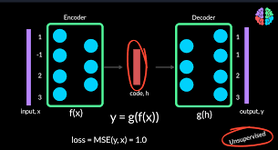

首先，用花书第14章的原文介绍一下自编码器：
自编码器是一种神经网络，经过训练后，能尝试将输入复制到输出。
自编码器内部有一个隐藏层h，可以产生编码（code）用于输入。
该网络可以看做两部分组成：一个由函数表示的编码器和一个生成重构的解码器
如果一个自编码器只是简单地学会，那么这个自编码器就没什么特别的用处。
相反，不应该将自编码器设计成输入和输出完全相等。通常需要向自编码器加一些约束，使其只能近似复制，并只能复制与训练数据相似的输入。

使用自编码器，如何用于异常检测？假如有一组已知是正常的数据，用这些数据训练模型，用训练好的模型判断未知的数据是否异常。原理是：自编码器是无监督学习模型，从输入数据中提取特征并将其压缩到一个潜在空间，再从这个潜在空间重建输入数据。对于正常数据，自编码器应该能够很好地重建输入数据；而对于异常数据，由于自编码器没有在训练时见过这些数据，重建误差通常会较大，因此可以用这个重建误差来判断数据是否异常。
好的，所以看到这里有几个问题：怎么压缩的？怎么重建的？重建就是预测吗？潜在空间是什么？
自编码器的模型类型
关于损失函数：用于衡量模型预测结果与实际目标值之间的差异。模型的目标是通过不断调整内部参数（如权重和偏置）来最小化损失函数的值，从而提高预测的准确性。在自编码器中，损失函数用于衡量输入数据和重建数据之间的差异。自编码器的训练目标是使这个差异最小化，以便模型能够很好地重建输入数据。比如上面提到的均方误差，公式如下，其中是观测值（实际值），是预测值。
损失的衡量：对于一个自编码器，我输入了原始数据，和经过编码解码的重建数据。假如使用均方误差作为损失函数，我计算出输入和重建数据的均方误差。但是这个损失值计算出来之后，我怎么知道他小不小，这个大小怎么衡量呢？主要参考几个方面：
假设有一份 N 行（N 个样本）M 列（M 个特征）的数据，表示该数据结构的变量为 Data。用这段数据构建一个只有一个编码器和一个解码器的自编码模型。
import pandas as pd
import numpy as np
from tensorflow.keras.layers import Input, Dense
from tensorflow.keras.models import Model
from tensorflow.keras.optimizers import Adam
from sklearn.metrics import mean_squared_error
from sklearn.preprocessing import LabelEncoder
from sklearn.preprocessing import MinMaxScaler
df = pd.read_csv('data.csv') # 导入CSV文件
df['Gender'] = df['Gender'].map({'Female': 0, 'Male': 1})
le = LabelEncoder()
df['Course'] = le.fit_transform(df['Course'])
df['YearOfStudy'] = le.fit_transform(df['YearOfStudy'])
df_numeric = df.select_dtypes(include=['number'])
scaler = MinMaxScaler()
df_normalized = pd.DataFrame(scaler.fit_transform(df_numeric), columns=df_numeric.columns)
Data = df_normalized.values # 转成numpy数组Data，大小是N行*M列
# 构建自编码器模型：输入、编码器和解码器
input_layer = Input(shape=(Data.shape[1],)) # 定义输入层的形状，Data.shape[1] 表示列数，输入数据的特征数为 M
encoded = Dense(10, activation='relu')(input_layer) # 编码器层，压缩数据到一个较小的潜在空间，比如设置10个神经元，制定relu为激活函数。
decoded = Dense(Data.shape[1], activation='sigmoid')(encoded) # 解码器层，重建数据到原始特征数，输出层，特征数为 M
# 定义自编码器模型
autoencoder = Model(inputs=input_layer, outputs=decoded)
# 设置模型，Adam作为优化器，均方误差作为损失函数
autoencoder.compile(optimizer=Adam(), loss='mean_squared_error')
# 训练模型
autoencoder.fit(Data, Data, epochs=50, batch_size=32, shuffle=True, validation_split=0.1)
# 使用模型进行重建
reconstructed_data = autoencoder.predict(Data)
mse_per_sample = np.mean((Data - reconstructed_data)**2, axis=1)
threshold = np.percentile(mse_per_sample, 95)
is_anomaly = mse_per_sample > threshold
用Dense层构建编码器、解码器：Dense 在神经网络中，这是一个全连接层。它将输入数据与一组权重（weight）进行线性运算，会加上一个偏置项。
compile函数用于设置模型的优化器和损失函数。
fit 函数用于训练模型。这个函数的参数是输入数据和目标数据，并通过优化过程来调整模型的参数，以最小化损失函数。
自编码器的目标是压缩输入数据，如果编码器的神经元数与输入维度相同或更多，那么自编码器就没有实际的压缩过程。它会变成一个简单的恒等映射，直接将输入复制到输出，而没有真正的学习或压缩。
95th 百分位数：这个值表示训练数据中 95% 的样本的重建误差都低于这个阈值，只有 5% 的样本的重建误差高于这个值。在异常检测中，这意味着重建误差高于 95th 百分位数的样本被认为是异常的。